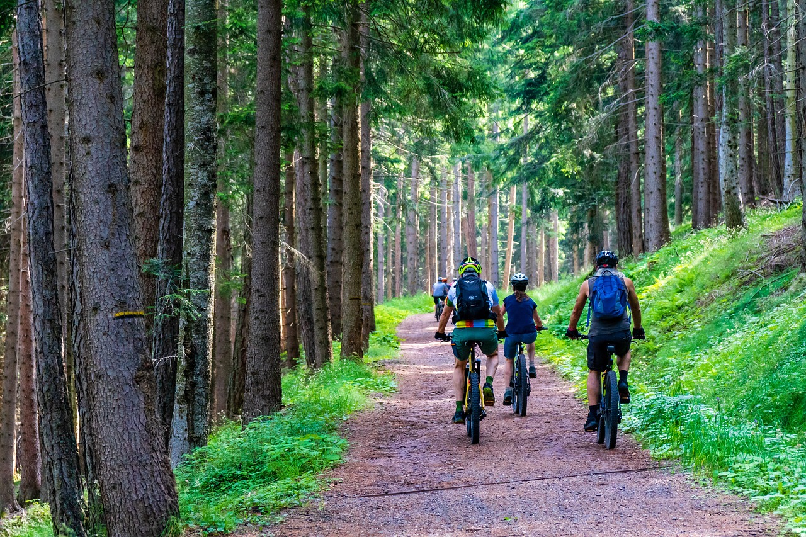

¿Por qué este curso?
Todos nos hemos propuesto alguna vez perder peso, hacer más ejercicio o comer más sano. Yo misma puedo incluirme en estos tres supuestos, y no os voy a engañar, la cosa me va regular. La única de estas tres cosas que cumplo con bastante éxito es la de hacer ejercicio.
Hace unos años me adentré en el mundo de la bicicleta, y me acabé enganchando a esta "secta". En mis inicios no entendía como podían gastar esas cantidades de dinero para comprarse una bici o unas zapatillas. En unos años he pesado de tener una bicicleta de baja gama y con la equipación más barata posible a ir con sensores de todo tipo, GPS, equipación buena y estar en posesión de dos bicis y un rodillo (los ciclistas sabéis de qué estoy hablando).
Dentro de este mundo pude comprobar como deportistas amateurs entrenan y cuidan su dieta para competir en carreras duras. Además de eso, combinan su alimentación con batidos recuperados, suplementos, geles y barritas durante sus salidas, etc. Esto es algo que me sorprende y me hace preguntarme si yo debería llevar barritas o geles especiales, en vez del típico plátano o la barrita de cereales de toda la vida (sí, ya lo se son puro azúcar).
Este boom de la nutrición deportiva no es algo de exclusivo de ahora, en todos los deportes hay un negocio que gira alrededor de los suplementos nutritivos. Su uso o no, depende de lo que pretendamos conseguir con la práctica de algún deporte. Pero en muchas ocasiones, la gente se deja llevar por la publicidad y no son del todo conscientes que podrían estar prescindiendo de ellos.
En general, las personas tienen unos conocimientos básicos sobre nutrición y metabolismo, que les llevan a consumir lo que hay en el mercado sin analizar realmente si lo necesitan. Utilizar estos suplementos puede hacernos sentir profesionales, pero deportistas de élite tienen a su disposición nutricionistas y entrenadores expertos que velan por su alimentación antes, durante y después de los entrenamientos. Todo lo que ingieren está medido y controlado por expertos.
En este curso aprenderás nociones básicas de anatomía, fisiología, nutrición y alimentación. Con toda esa información en la mano podrás juzgar y valorar si realmente necesitas suplementos para realizar tu práctica deportiva habitual.
¡Y lo más importante!, podrás rebatir a tu cuñado que no tiene sentido llevar tres barritas y cuatro geles de glucosa para salir dos horas en bicicleta, y que luego llega a casa y se toma una cerveza junto a una pizza familiar.
.............
.............
Vale sí, yo también lo hago, lo de las barritas y los geles no, pero en lo de la pizza me representa.
Advertencia:
Debo advertir que la información que vas a encontrar a continuación no es ninguna guía nutricional para deportistas, no voy a aconsejar ni nombrar ningún suplemento, este contenido solo pretende plasmar conocimientos nutricionales para todo aquel que tenga curiosidad de aprender.
Los contenidos que se van a tratar están redactados de manera que puedan ser comprensible para todo el mundo.
Este curso es un proyecto a largo plazo, los contenidos no están completos y se van a ir actualizando poco a poco.
Su creación responde a la necesidad de practicar la edición de contenidos.